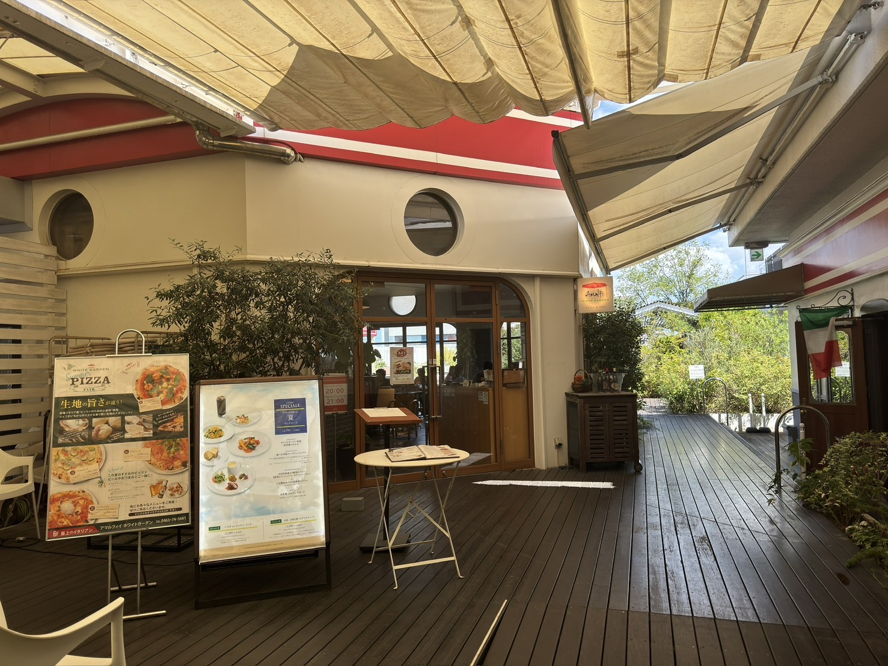

The journey not
the arrival matters.
湘南の「あなただけ」を探してみよう。
「旅とは、どこかに辿り着くことが重要なのではない」
イギリスの詩人、T.S.エリオットが残したことば。
見知らぬ土地での新たな発見や多くの出逢い
そんな「過程」を愉しむのも、案外良いのかもしれない。
RECOMMENDED
-

- Amalfi WHITE GARDEN
- ラスカ平塚屋上にあるガーデンと一体したレストラン。BBQもお楽しみいただけます。
-
- OISO CONNECT
- 大磯ならではの農水産物等を扱うショップや、地元の食材にこだわったカフェなどで構成される交流施設です。
-
- 喫茶シャポー
- 1963年創業の老舗喫茶店。ネルドリップにこだわった美味しいコーヒーが魅力です。
-
- ブーランジェリー ヤマシタ
- 街中にポツンと佇むおしゃれなベーカリー。カフェも併設されており、まるでジブリのような世界観を感じられます。
-

- 高来神社
- 徳川家康の神影である東照宮が併せ祀られ諸大名が参勤交代の折に馬を降りて参詣した神社。